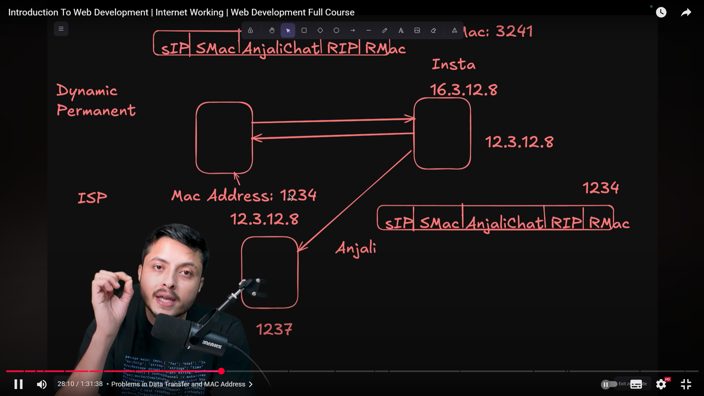
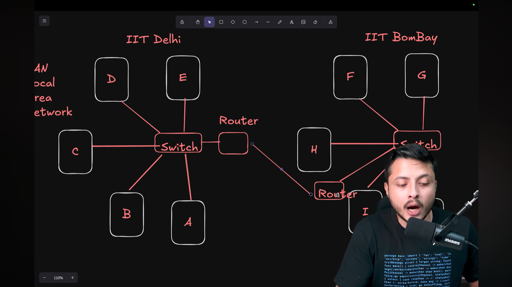
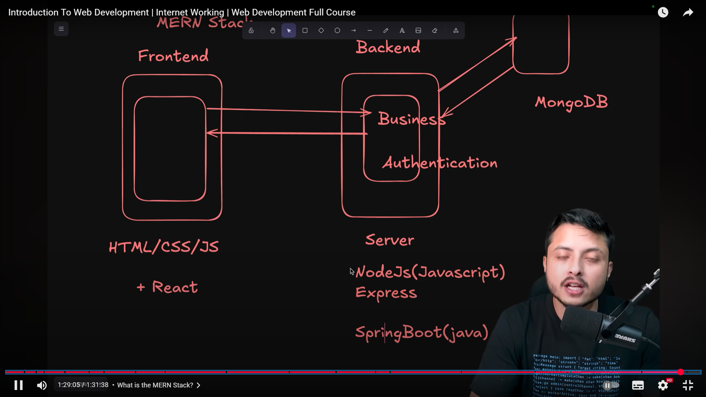

Lecture Video
Lecture Notes
Here are the topics covered in Day 1 of the course, explained step by step:
- Introduction to the Web Development Course
- What is the Internet? – Understanding global connectivity.
- How is data transferred? – Packets, protocols, and flow of information.
- What is IP Address? – Unique identifiers for devices on a network.
- How to access a website – From typing a URL to page rendering.
- Who assigns the IP Address? – Role of ISPs and DHCP.
- Concept of DNS – Converting domain names to IP addresses.
- In-depth Working of DNS – Resolver, Root, TLD, and Authoritative servers.
- Problems in Data Transfer and MAC Address
- What is Port Numbers? – Communication endpoints in networking.
- IPv4 & IPv6 – Versions of Internet Protocol.
- MAC Address Format
- Port Number Format
- Local Area Network, Switch & Router
- Public and Private Addresses
- Modern Routers
- What is a VPN? – Secure tunneling of internet traffic.
- What is Web Development?
- What is the MERN Stack?
- Who is a Full-Stack Developer?
- Wrapping Up the Video
How the Internet Works (Simplified)
- User types a URL in the browser.
- Browser sends a request to DNS to resolve domain.
- DNS returns IP address of server.
- Browser sends request to that IP.
- Server responds with HTML/CSS/JS files.
- Browser renders the website for user.
Screenshots
Some snapshots from the video for quick reference:
  